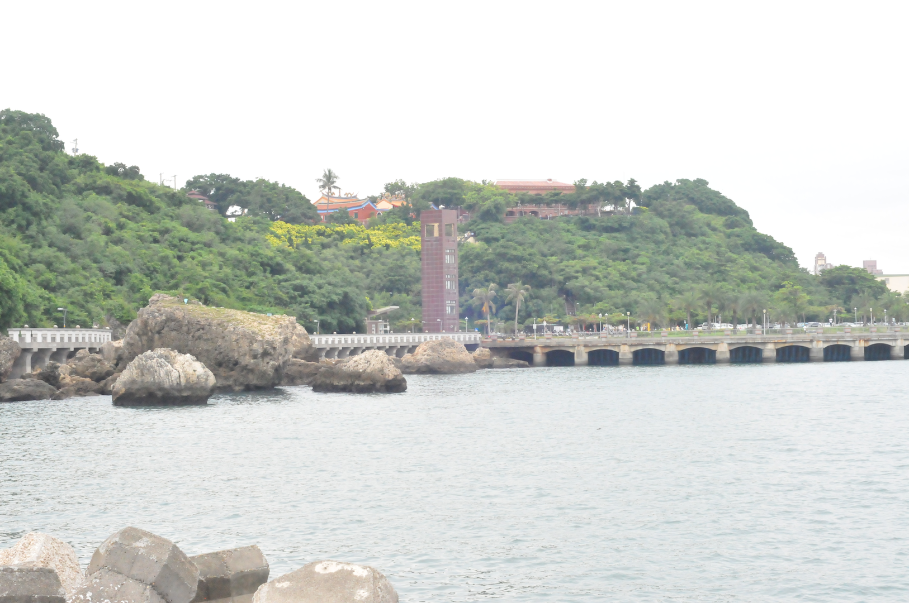

painterdrown Blog - painterdrown Travel
台湾游第五天(26th)：南国你好，你好
⏰ 2017-08-26
👨🏻💻 painterdrown
早晨八点的闹钟⏰ling ling king~ 然而没能把我们准时叫醒，9点多起来之后出发去高雄啦！（本来是计划去阿里山的，但是由于山路要走太久，就改成去高雄逛个半天）


作为大陆中山大学的一子，当初听到海峡的那一边也有一所国立中山大学时，当然不错错过这次机会。我随便搜索🔍了一下，中山大学的国际排名是300+，国内排名前10；国立中山大学的国际排名400+，台湾排名第5，所以他们俩兄弟还是差不多滴。🚕300台币从高雄高铁🚄站到这，跟港科大一样，这是一所面朝大海的大学😍正门是一根砖红色大柱子写着国立中山大学几个大字（有点像我的高中——潮州金山中学）。



第一个地方我们是去岸边🏖️吹吹海风～很巧，西子湾也在这边哦！而且西子湾最大的一个特色就是：它的沙子是灰色的，就是水泥那种颜色，看起来没有平常的沙滩那样地阳光☀️鲜艳。

然后就是进去教学区这这看那那看，讲真，真没有让我眼前一亮的地方。加上这所大学是1980年建成的，很多设施建筑🏠看起来有点老旧～ 为了不错过去垦丁的巴士🚌，我们还是没待多久就离开了～算是来过这里走一走就足够了🐶


晚上🌃8点左右到的垦丁，下车的地方在夜市的一头，而我们的旅店在夜市的另一头，这不巧了吗！这里的夜市还是跟台北的夜市不一样，多了很多南部的海滩风味🐚炸鲜奶，月亮🌛虾🦐饼🍪，蛤蛤闷爆了，烤牛肉（最喜欢这个啦），盐酥鸡🐔，吃到心满意足就兜着去旅店checkin啦！That is all for today~ 对啦，今晚的夜市下起了雨🌧️，马路上拥挤的人群，路两旁雨中闪烁的led灯，我特别喜欢这样的景象，希望你们也喜欢💕！


旅行小细节No.1⃣️
之前说到台北的扶手电梯，人们都靠右边站，留着左边给赶时间的人。今天在高雄搭捷运🚇发现左边其实也站满啦（跟广州一样2333）。不过也不是说南方的素质比较随意，这里的人们也是很热情很有礼貌的👦👧，没差啦！